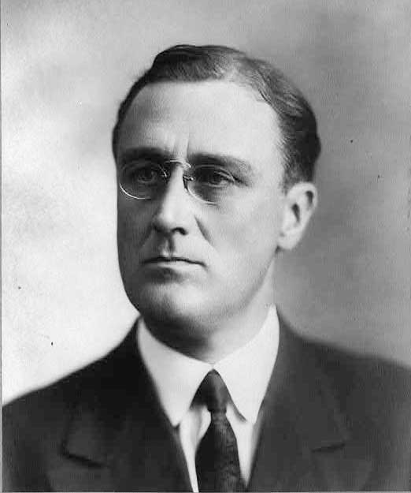
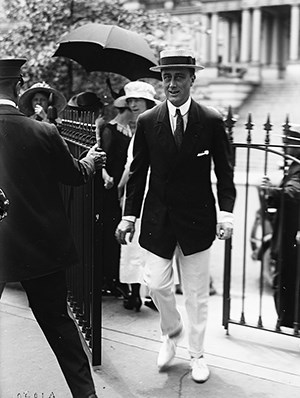
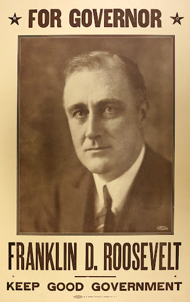

Before Presidency (Entered Politics)

Senator of NY (1911-1913)
- 26th District (Dutchess, Columbia, Putnam)
- Won by 1,000 votes
- Defended farmers
- Opposed Tammany’s choice
- Mostly progressive → New Nationalism ideas (Theodore Roosevelt)
- Government had a role in maintaining a fair society
- Reelected in 1912 but he didn't finish his second term.
- Became Assistant Secretary of Navy

Assistant Secretary of Navy (1913-1920)
- Helped fix the naval policy in the United States
- Advocated for a bigger navy → gained a lot of support
- Advocated for US to prepare for war
- Looked out for the navy during the war
- Tried for Democratic nomination for vice president but failed
- Disabled 1921 (polio) which paused his political career (1921-1928)
- Was paralysed from the stomach down
- Could never walk again without aid

Governor of NY (1928-1931)
- Continued his political career
- Made alliances with democrats throughout the country
- Went to areas where there were a lot of ethnic and Catholic people
- Great Depression
- Waited to see if the economy would improve which failed
- Stood for farmers to have lower taxes
- Helped pass a public works program in NY